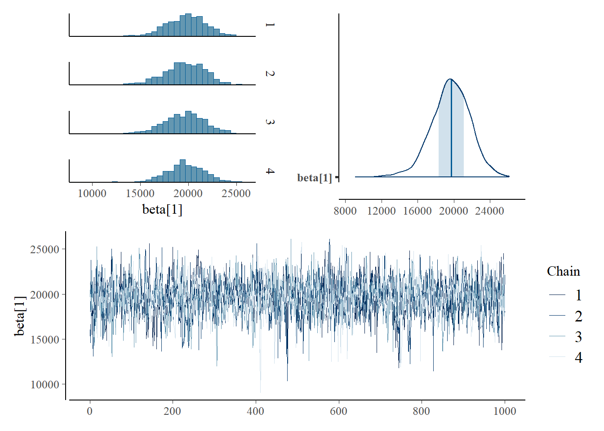
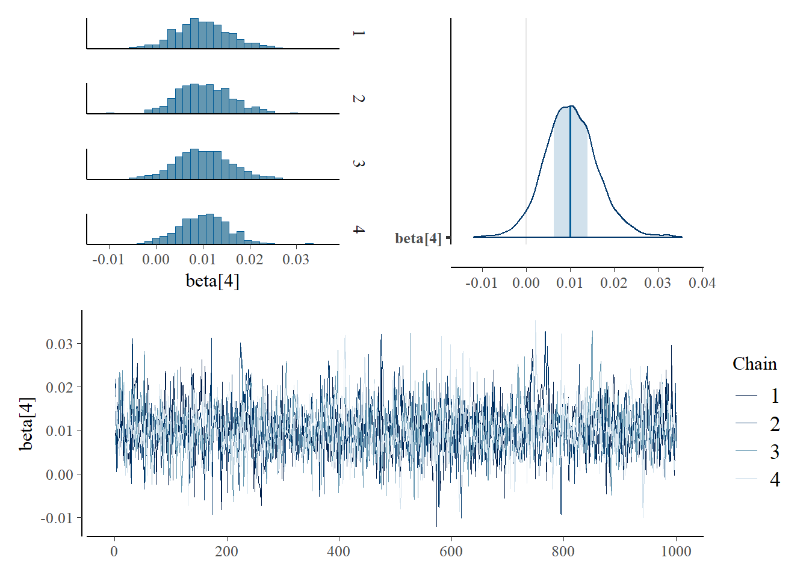
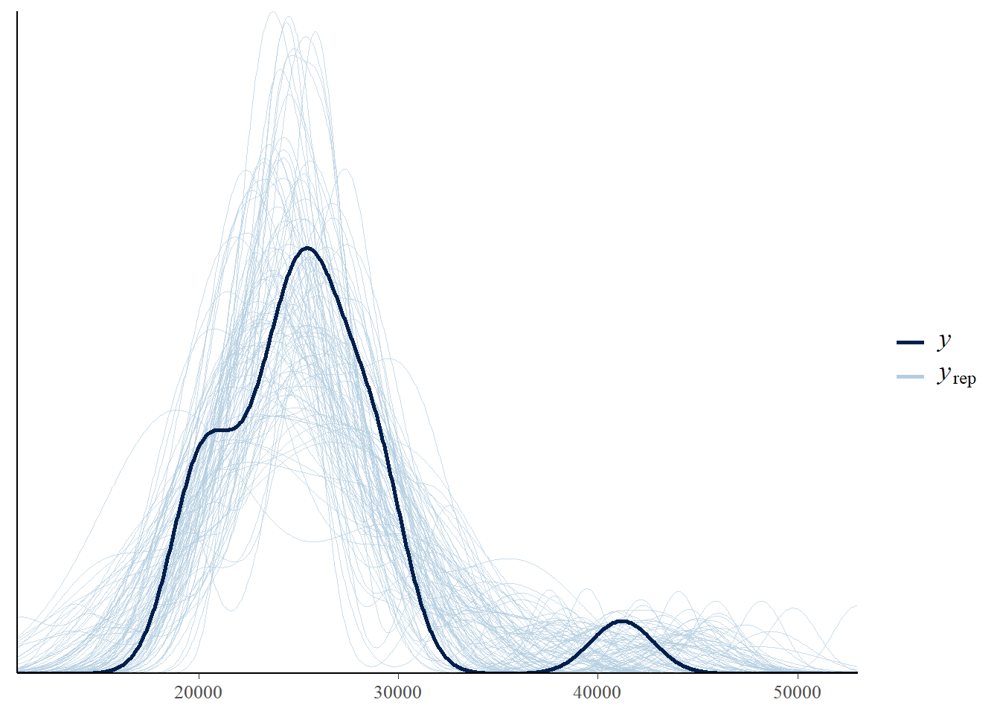
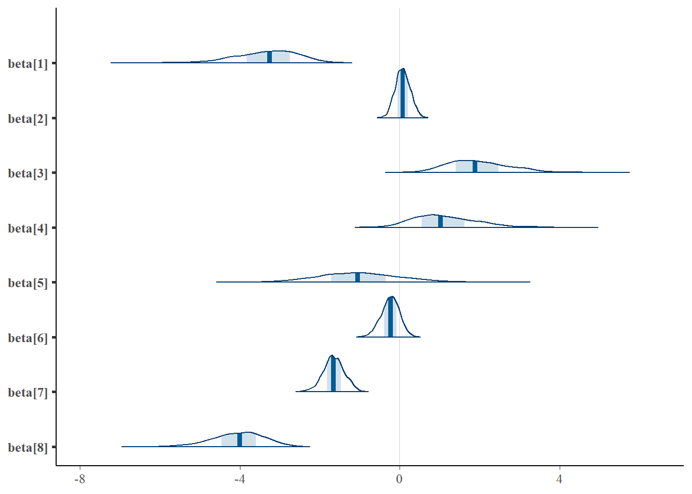
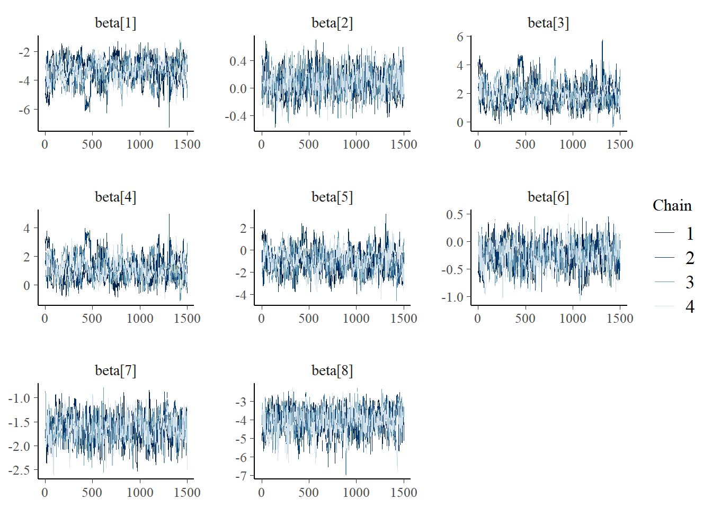
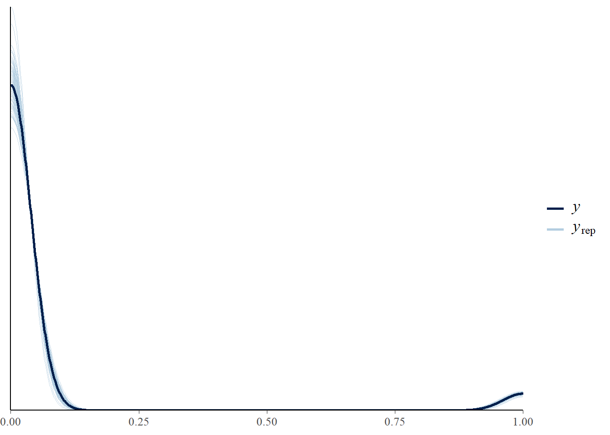
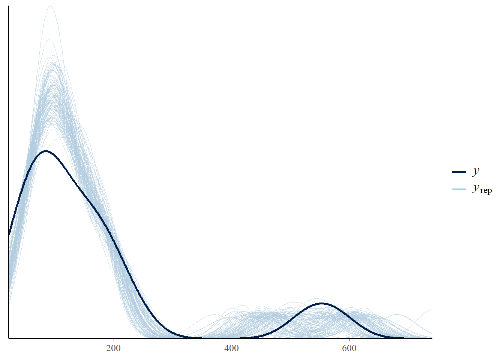

Modelos lineales y mixtos en R y STAN
CEPAL - División de Estadísticas Sociales
Modelos lineales.
La regresión lineal es la técnica básica del análisis econométrico. Mediante dicha técnica tratamos de determinar relaciones de dependencia de tipo lineal entre una variable dependiente o endógena, respecto de una o varias variables explicativas o exógenas.
\[ \begin{eqnarray*} \left[\begin{array}{c} Y_{1}\\ Y_{2}\\ \vdots\\ Y_{n} \end{array}\right] & = & \left[\begin{array}{cccc} 1 & x_{11} & \cdots & x_{1k}\\ 1 & x_{21} & \cdots & x_{2k}\\ \vdots & \vdots & \ddots & \vdots\\ 1 & x_{n1} & \cdots & x_{nk} \end{array}\right]\left[\begin{array}{c} \beta_{0}\\ \beta_{1}\\ \vdots\\ \beta_{k} \end{array}\right]+\left[\begin{array}{c} \epsilon_{1}\\ \epsilon_{2}\\ \vdots\\ \epsilon_{n} \end{array}\right] \end{eqnarray*} \] escrita de forma general sería
\[ \begin{align*} \boldsymbol{Y} & = & \boldsymbol{X\beta} + \boldsymbol{\epsilon} \\ E\left(\boldsymbol{Y}\mid \boldsymbol{X}\right) & = & \boldsymbol{XB} \end{align*} \]
donde \(\boldsymbol{\epsilon} \sim N\left( 0, \sigma^2\boldsymbol{I}_n\right)\) y el estimador de \(B\) esta dado por:
\[ \boldsymbol{\hat{B}}=\boldsymbol{\left(X^{T}X\right)^{-1}X^{T}Y} \]
Modelos lineales bayesiano.
En primer lugar, nótese que el interés particular recae en la distribución del vector de \(n\) variables aleatorias \(\mathbf{Y}=(Y_1\ldots,Y_n)'\) condicional a la matriz de variables auxiliares \(\mathbf{X}\) e indexada por el vector de parámetros de interés \(\boldsymbol{\beta}=(\beta_0,\ldots,\beta_k)'\) dada por \(p(\mathbf{Y} \mid \boldsymbol{\beta},\mathbf{X})\).
El modelo básico y clásico asume que la verosimilitud para las variables de interés es
\[ \begin{equation*} \mathbf{Y} \mid \boldsymbol{\beta},\sigma^2,\mathbf{X}\sim N_n(\mathbf{X}\boldsymbol{\beta},\sigma^2\mathbf{I}_n) \end{equation*} \]
en donde \(\mathbf{I}_n\) denota la matriz identidad de orden \(n\times n\). Por supuesto, el modelo normal no es el único que se puede postular como verosimilitud para los datos.
Parámetros dependientes.
Los parámetros de interés son \(\boldsymbol{\beta}\) y \(\sigma^2\) y su distribuciones previa conjunta se supone que está dada por
\[ \begin{equation*} p(\boldsymbol{\beta},\sigma^2)=p(\boldsymbol{\beta} \mid \sigma^2)p(\sigma^2) \end{equation*} \]
Específicamente, la distribución previa del parámetro \(\boldsymbol{\beta}\) condicionada a \(\sigma^2\) es informativa y está regida por la siguiente estructura probabilística
\[ \begin{equation*} \boldsymbol{\beta} \mid \sigma^2 \sim N_q(\mathbf{b},\sigma^2\mathbf{B}) \end{equation*} \]
en donde \(\mathbf{b}\) es un vector de medias y \(\mathbf{B}\) es una matriz de varianzas simétrica y definida positiva. Por otro lado, la distribución previa del parámetro \(\sigma^2\) también se considera informativa y dada por \[ \begin{equation*} \sigma^2 \sim Inversa-Gamma\left( \frac{n_0}{2}, \frac{n_0\sigma^2_0}{2} \right) \end{equation*} \]
La distribución posterior conjunta de los parámetros de interés \(\boldsymbol{\beta},\sigma^2\) está dada por
\[ \begin{align} p(\boldsymbol{\beta},\sigma^2 \mid \mathbf{Y},\mathbf{X}) &=(\sigma^2)^{-q/2} \exp\left\{-\frac{1}{2\sigma^2}(\boldsymbol{\beta}-\mathbf{b}_q)'\mathbf{B}_q^{-1}(\boldsymbol{\beta}-\mathbf{b}_q)\right\} \notag \\ &\hspace{3cm} \times (\sigma^2)^{-n_1/2-1} \exp\left\{-\frac{n_1\sigma^2_1}{2\sigma^2}\right\} \end{align} \] donde
\[ \begin{align*} \mathbf{B}_q &= \left(\mathbf{B}^{-1}+\mathbf{X}'\mathbf{X}\right)^{-1}\\ \mathbf{b}_q &=\mathbf{B}_q\left(\mathbf{B}^{-1}\mathbf{b}+\mathbf{X}'\mathbf{Y}\right) \end{align*} \]
y además
\[ \begin{align*} n_1&=n_0+n\\ n_1\sigma^2_1&= n_0\sigma^2_0+(\mathbf{Y}-\mathbf{X}\mathbf{b}_q)'\mathbf{Y}+(\mathbf{b}-\mathbf{b}_q)'\mathbf{B}^{-1}\mathbf{b} \end{align*} \]
donde \(n_0\) denota el número de datos previos. La distribución posterior conjunta de los parámetros de interés tiene la forma de la distribución Normal-Gamma.
La distribución posterior del vector de parámetros \(\boldsymbol{\beta}\) condicionada a \(\sigma^2,\mathbf{Y},\mathbf{X}\) es
\[ \begin{equation*} \boldsymbol{\beta} \mid \sigma^2,\mathbf{Y},\mathbf{X} \sim N_q(\mathbf{b}_q,\sigma^2\mathbf{B}_q) \end{equation*} \]
La distribución posterior del parámetro \(\sigma^2\) condicionada es
\[ \begin{equation*} \sigma^2 \mid \mathbf{Y},\mathbf{X} \sim Inversa-Gamma\left(\frac{n_1}{2},\frac{\sigma^2_1}{2}\right) \end{equation*} \]
Parámetros independientes
En esta ocasión se considera que los parámetros son independientes previa; es decir que la distribución previa conjunta está dada por
\[ \begin{equation*} p(\boldsymbol{\beta},\sigma^2)=p(\boldsymbol{\beta})p(\sigma^2) \end{equation*} \]
Como es natural, la distribución previa del vector de parámetros \(\boldsymbol{\beta}\) es normal, aunque esta vez la matriz de varianzas no va a depender del otro parámetro \(\sigma^2\), por lo tanto se tiene que
\[ \begin{equation*} \boldsymbol{\beta} \sim N_q(\mathbf{b},\mathbf{B}) \end{equation*} \]
Igualmente, el parámetro \(\sigma^2\) no depende de \(\boldsymbol{\beta}\) y es posible asignarle la siguiente distribución previa
\[ \begin{equation*} \sigma^2\sim Inversa-Gamma\left(\frac{n_0}{2},\frac{n_0\sigma^2_0}{2}\right) \end{equation*} \]
la distribución posterior conjunta de \(\boldsymbol{\beta}\) y \(\sigma^2\) puede ser escrita como
\[ \begin{align} p(\boldsymbol{\beta},\sigma^2 \mid \mathbf{Y},\mathbf{X})&\propto p(\mathbf{Y} \mid \boldsymbol{\beta},\sigma^2)p(\boldsymbol{\beta})p(\sigma^2)\notag \\ &\propto (\sigma^2)^{-n/2} \exp\left\{-\frac{1}{2\sigma^2}\left(Q(\boldsymbol{\beta})+S^2_e\right)\right\}\notag\\ &\times \exp\left\{-\frac{1}{2}(\boldsymbol{\beta}-\mathbf{b})'\mathbf{B}^{-1}(\boldsymbol{\beta}-\mathbf{b})\right\} (\sigma^2)^{-n_0/2-1} \exp\left\{-\frac{n_0\sigma^2_0}{2\sigma^2}\right\}\notag\\ &=(\sigma^2)^{-\frac{n+n_0}{2}-1} \exp\left\{-\frac{1}{2\sigma^2}\left[Q(\boldsymbol{\beta})+S^2_e+n_0\sigma^2_0\right]\right\} \notag \\ &\times \exp\left\{-\frac{1}{2}(\boldsymbol{\beta}-\mathbf{b})'\mathbf{B}^{-1}(\boldsymbol{\beta}-\mathbf{b})\right\} \end{align} \]
La distribución posterior del parámetro \(\boldsymbol{\beta}\) condicionado a \(\sigma^2,\mathbf{Y},\mathbf{X}\) es
\[ \begin{equation*} \boldsymbol{\beta} \mid \sigma^2,\mathbf{Y},\mathbf{X} \sim N_q(\mathbf{b}_q,\mathbf{B}_q) \end{equation*} \]
donde
\[ \begin{align*} \mathbf{B}_q &= \left(\mathbf{B}^{-1}+\frac{1}{\sigma^2}\mathbf{X}'\mathbf{X}\right)^{-1}\\ \mathbf{b}_q &=\mathbf{B}_q\left(\mathbf{B}^{-1}\mathbf{b}+\frac{1}{\sigma^2}\mathbf{X}'\mathbf{Y}\right) \end{align*} \]
La distribución posterior del parámetro \(\sigma^2\) condicionado a \(\boldsymbol{\beta},\mathbf{Y},\mathbf{X}\) es
\[ \begin{equation*} \sigma^2 \mid \boldsymbol{\beta},\mathbf{Y},\mathbf{X} \sim Inversa-Gamma\left( \frac{n_1}{2}, \frac{n_1\sigma_{\boldsymbol{\beta}}^2}{2} \right) \end{equation*} \]
donde \(n_1=n+n_0\),
\[
\begin{align*}
n_1\sigma_{\boldsymbol{\beta}}^2&=&Q(\boldsymbol{\beta})+S^2_e+n_0\sigma^2_0\\
Q(\boldsymbol{\beta})&=&(\boldsymbol{\beta}-\hat{\boldsymbol{\beta}})'(\mathbf{X}'\mathbf{X})(\boldsymbol{\beta}-\hat{\boldsymbol{\beta}})\\
S^2_e&=&(\mathbf{y}-\mathbf{X}\hat{\boldsymbol{\beta}})'(\mathbf{y}-\mathbf{X}\hat{\boldsymbol{\beta}})
\end{align*}
\]
y \(\sigma^2_0\) es una estimación previa del parámetro de interés \(\sigma^2\).
Práctica en STAN (Modelo lineal simple)
- ENCUESTA CONTINUA DE HOGARES (ECH) 2020
library(tidyverse)
encuesta <- readRDS("../Data/encuestaURY20N.rds") %>%
filter(edad > 18)
tasa_desocupacion <- readRDS("../Data/tasa_desocupacion2.rds")
(datalm <- encuesta %>%
transmute(
depto = str_pad(
string = dpto,
pad = "0",
width = 2
),
ingcorte) %>% group_by(depto) %>%
summarise( Promedio = mean(ingcorte)) %>%
left_join(tasa_desocupacion, by = "depto"))| depto | Promedio | tasa_desocupacion | Luces_nocturna | Suelo_cultivo | Suelo_urbano |
|---|---|---|---|---|---|
| 01 | 41200.06 | 0.0666792 | 29595.102 | 6008.267 | 27716.573 |
| 02 | 20178.12 | 0.0615587 | 5042.455 | 96538.694 | 2789.773 |
| 03 | 28451.03 | 0.0696271 | 61932.553 | 191183.137 | 24827.843 |
| 04 | 20273.52 | 0.0647848 | 6373.506 | 282859.039 | 4045.102 |
| 05 | 26353.41 | 0.0418771 | 17658.996 | 413940.753 | 7373.220 |
| 06 | 26101.20 | 0.0565903 | 8937.016 | 260584.235 | 3485.773 |
| 07 | 29259.10 | 0.0449447 | 3105.961 | 202118.604 | 2070.012 |
| 08 | 28382.54 | 0.0563808 | 9133.392 | 427540.894 | 4271.471 |
| 09 | 26428.93 | 0.0570070 | 6858.906 | 268888.988 | 4218.702 |
| 10 | 28970.37 | 0.0508015 | 20933.169 | 91208.478 | 9864.745 |
| 11 | 25903.19 | 0.0588967 | 11204.749 | 354537.710 | 5420.133 |
| 12 | 23778.48 | 0.0755263 | 6993.475 | 384763.745 | 3115.224 |
| 13 | 19828.38 | 0.0601342 | 7307.502 | 86058.847 | 3040.980 |
| 14 | 24960.09 | 0.0564731 | 10670.400 | 281370.863 | 4818.361 |
| 15 | 23782.52 | 0.0634757 | 9416.886 | 165983.910 | 4762.259 |
| 16 | 24429.02 | 0.0619945 | 22229.902 | 291555.851 | 5303.322 |
| 17 | 25172.54 | 0.0564711 | 9021.925 | 566605.298 | 3977.627 |
| 18 | 20496.49 | 0.0649554 | 6809.667 | 180824.812 | 3902.745 |
| 19 | 22647.60 | 0.0695013 | 5830.145 | 268517.027 | 3459.565 |
Diagrama de dispersión por las variables
Creando código de STAN
data {
int<lower=0> n; // Número de observaciones
vector[n] x; // Variable predictora
vector[n] y; // Variable respuesta
}
parameters {
real b0; // Intercepto
real b1; // Pendiente
real<lower=0> sigma2;
}
transformed parameters{
real<lower=0> sigma;
sigma = sqrt(sigma2);
}
model {
b0 ~ normal(0, 1000);
b1 ~ normal(0, 1000);
sigma2 ~ inv_gamma(0.0001, 0.0001);
y ~ normal(b0 + b1*x, sigma); // likelihood
}
generated quantities {
real ypred[n]; // vector de longitud n
ypred = normal_rng(b0 + b1*x, sigma);
}Preparando el código de STAN
library(cmdstanr)
## Definir el modelo
fitLm1 <- cmdstan_model(stan_file = "../Data/modelosStan/ModeloLm1.stan") Organizando datos para STAN
sample_data <- list(n = nrow(datalm),
x = datalm$Suelo_urbano,
y = datalm$Promedio)Para ejecutar STAN en R tenemos la librería cmdstanr
model_fitLm1 <- fitLm1$sample(data = sample_data,
chains = 4,
parallel_chains = 4,
num_warmup = 2000,
num_samples = 1000,
seed = 1234,
refresh = 0)Running MCMC with 4 parallel chains...
Chain 1 finished in 0.4 seconds.
Chain 2 finished in 0.4 seconds.
Chain 3 finished in 0.4 seconds.
Chain 4 finished in 0.4 seconds.
All 4 chains finished successfully.
Mean chain execution time: 0.4 seconds.
Total execution time: 0.9 seconds.La estimación del parámetro \(B\) es:
model_fitLm1$summary(variables = c("b0","b1","sigma","sigma2")) %>%
select(variable, mean,sd)| variable | mean | sd |
|---|---|---|
| b0 | 8.239326e+02 | 1.001445e+03 |
| b1 | 2.048245e+00 | 4.041642e-01 |
| sigma | 1.662340e+04 | 3.018359e+03 |
| sigma2 | 2.854455e+08 | 1.090641e+08 |
library(posterior)
library(bayesplot)
library(patchwork)
(mcmc_hist_by_chain(model_fitLm1$draws("b0")) +
mcmc_areas(model_fitLm1$draws("b0")))/
mcmc_trace(model_fitLm1$draws("b0")) (mcmc_hist_by_chain(model_fitLm1$draws("b1")) +
mcmc_areas(model_fitLm1$draws("b1")))/
mcmc_trace(model_fitLm1$draws("b1")) (mcmc_hist_by_chain(model_fitLm1$draws("sigma2")) +
mcmc_areas(model_fitLm1$draws("sigma2")))/
mcmc_trace(model_fitLm1$draws("sigma2")) y_pred_B <- model_fitLm1$draws(variables = "ypred", format = "matrix")
rowsrandom <- sample(nrow(y_pred_B), 100)
y_pred2 <- y_pred_B[rowsrandom, ]
ppc_dens_overlay(y = as.numeric(datalm$Promedio), y_pred2)Práctica en STAN (modelo lineal múltiple)
Creando código de STAN
data {
int<lower=0> n; // Número de observaciones
int<lower=0> K; // Número de predictores
matrix[n, K] x; // Matrix de predictores
vector[n] y; // Vector respuesta
}
parameters {
vector[K] beta; // coefficients for predictors
real<lower=0> sigma2; // error scale
}
transformed parameters{
real<lower=0> sigma;
sigma = sqrt(sigma2);
}
model {
to_vector(beta) ~ normal(0, 10000);
sigma2 ~ inv_gamma(0.0001, 0.0001);
y ~ normal(x * beta, sigma); // likelihood
}
generated quantities {
real ypred[n]; // vector de longitud n
ypred = normal_rng(x * beta, sigma);
}Preparando el código de STAN
fitLm2 <- cmdstan_model(stan_file = "../Data/modelosStan/ModeloLm2.stan") Organizando datos para STAN
(Xdat <- model.matrix(Promedio ~ tasa_desocupacion + Luces_nocturna +
Suelo_cultivo + Suelo_urbano,data = datalm))| (Intercept) | tasa_desocupacion | Luces_nocturna | Suelo_cultivo | Suelo_urbano |
|---|---|---|---|---|
| 1 | 0.0666792 | 29595.102 | 6008.267 | 27716.573 |
| 1 | 0.0615587 | 5042.455 | 96538.694 | 2789.773 |
| 1 | 0.0696271 | 61932.553 | 191183.137 | 24827.843 |
| 1 | 0.0647848 | 6373.506 | 282859.039 | 4045.102 |
| 1 | 0.0418771 | 17658.996 | 413940.753 | 7373.220 |
| 1 | 0.0565903 | 8937.016 | 260584.235 | 3485.773 |
| 1 | 0.0449447 | 3105.961 | 202118.604 | 2070.012 |
| 1 | 0.0563808 | 9133.392 | 427540.894 | 4271.471 |
| 1 | 0.0570070 | 6858.906 | 268888.988 | 4218.702 |
| 1 | 0.0508015 | 20933.169 | 91208.478 | 9864.745 |
| 1 | 0.0588967 | 11204.749 | 354537.710 | 5420.133 |
| 1 | 0.0755263 | 6993.475 | 384763.745 | 3115.224 |
| 1 | 0.0601342 | 7307.502 | 86058.847 | 3040.980 |
| 1 | 0.0564731 | 10670.400 | 281370.863 | 4818.361 |
| 1 | 0.0634757 | 9416.886 | 165983.910 | 4762.259 |
| 1 | 0.0619945 | 22229.902 | 291555.851 | 5303.322 |
| 1 | 0.0564711 | 9021.925 | 566605.298 | 3977.627 |
| 1 | 0.0649554 | 6809.667 | 180824.812 | 3902.745 |
| 1 | 0.0695013 | 5830.145 | 268517.027 | 3459.565 |
sample_data <- list(n = nrow(datalm),
K = ncol(Xdat),
x = as.matrix(Xdat),
y = datalm$Promedio)Para ejecutar STAN en R tenemos la librería cmdstanr
model_fitLm2 <- fitLm2$sample(data = sample_data,
chains = 4,
parallel_chains = 4,
seed = 1234,
refresh = 0)Running MCMC with 4 parallel chains...
Chain 1 finished in 1.8 seconds.
Chain 4 finished in 2.6 seconds.
Chain 3 finished in 2.8 seconds.
Chain 2 finished in 3.0 seconds.
All 4 chains finished successfully.
Mean chain execution time: 2.6 seconds.
Total execution time: 3.3 seconds.La estimación del parámetro \(B\) es:
model_fitLm2$summary(variables = c("beta","sigma2"))%>%
select(variable, mean,sd)| variable | mean | sd |
|---|---|---|
| beta[1] | 1.964638e+04 | 2.140133e+03 |
| beta[2] | -1.110047e+03 | 1.023341e+04 |
| beta[3] | -2.771689e-01 | 1.072407e-01 |
| beta[4] | 1.022820e-02 | 6.045200e-03 |
| beta[5] | 1.050852e+00 | 2.230622e-01 |
| sigma2 | 9.843444e+06 | 4.597092e+06 |
(mcmc_hist_by_chain(model_fitLm2$draws("beta[1]")) +
mcmc_areas(model_fitLm2$draws("beta[1]")))/
mcmc_trace(model_fitLm2$draws("beta[1]")) 
(mcmc_hist_by_chain(model_fitLm2$draws("beta[2]")) +
mcmc_areas(model_fitLm2$draws("beta[2]")))/
mcmc_trace(model_fitLm2$draws("beta[2]")) (mcmc_hist_by_chain(model_fitLm2$draws("beta[3]")) +
mcmc_areas(model_fitLm2$draws("beta[3]")))/
mcmc_trace(model_fitLm2$draws("beta[3]")) (mcmc_hist_by_chain(model_fitLm2$draws("beta[4]")) +
mcmc_areas(model_fitLm2$draws("beta[4]")))/
mcmc_trace(model_fitLm2$draws("beta[4]")) 
(mcmc_hist_by_chain(model_fitLm1$draws("sigma2")) +
mcmc_areas(model_fitLm1$draws("sigma2")))/
mcmc_trace(model_fitLm1$draws("sigma2")) 
y_pred_B <- model_fitLm2$draws(variables = "ypred", format = "matrix")
rowsrandom <- sample(nrow(y_pred_B), 100)
y_pred2 <- y_pred_B[rowsrandom,]
ppc_dens_overlay(y = as.numeric(datalm$Promedio), y_pred2)
Modelo lineal generalizado
Modelo Bernoulli con vínculo logístico
Este caso es típico en donde la variable respuesta sólo toma dos valores, uno en caso de un evento exitoso y cero, cuando se presenta un fracaso. Se supone que \(\mathbf{Y}=\{Y_1, \ldots, Y_n\}\) es un conjunto de variables aleatorias intercambiables cada una con distribución bernoulli de parámetro \(\theta_i\), y se quiere estudiar la relación entre \(\theta_i\) y las variables auxiliares \(\mathbf{X}_i\) por medio de la función de enlace \(g(\theta_i)=\mathbf{X}_i'\boldsymbol{\beta}\). Aquí consideramos la función de enlace logística
\[ \begin{equation} \eta_i=g(\theta_i)=logit(\theta_i)=\log\left(\frac{\theta_i}{1-\theta_i}\right) \end{equation} \]
fácilmente se encuentra que la función inversa para \(g(\cdot)\), está dada por
\[ \begin{equation*} \theta_i=g^{-1}(\eta_i)=\frac{\exp(\eta_i)}{1+\exp(\eta_i)} \end{equation*} \]
Notando que \(\eta_i=\mathbf{X}_i'\boldsymbol{\beta}\) y siguiendo con el modelamiento, se tiene que la verosimilitud de los datos está dada por
\[ \begin{align} p(\mathbf{Y}\mid \boldsymbol{\theta})&=\prod_{i=1}^n\theta_i^{y_i}(1-\theta_i)^{1-y_i} \notag \\ p(\mathbf{Y}\mid \boldsymbol{\beta})&=\prod_{i=1}^n\left(\frac{\exp(\mathbf{X}_i'\boldsymbol{\beta})}{1+\exp(\mathbf{X}_i'\boldsymbol{\beta})}\right)^{y_i} \left(1-\left(\frac{\exp(\mathbf{X}_i'\boldsymbol{\beta})}{1+\exp(\mathbf{X}_i'\boldsymbol{\beta})}\right)\right)^{1-y_i} \end{align} \]
Suponga que la distribución a previa para \(\boldsymbol{\beta}\) está regida por la siguiente estructura probabilística
\[ \begin{equation*} \boldsymbol{\beta}\sim N_q(\mathbf{b},\mathbf{B}) \end{equation*} \]
De esta manera, la distribución a posterior toma la siguiente forma.
\[ \begin{align*} p(\boldsymbol{\beta} \mid \mathbf{Y}, \mathbf{X})&\propto \prod_{i=1}^n\left(\frac{\exp(\mathbf{X}_i'\boldsymbol{\beta})}{1+\exp(\mathbf{X}_i'\boldsymbol{\beta})}\right)^{y_i} \left(1-\left(\frac{\exp(\mathbf{X}_i'\boldsymbol{\beta})}{1+\exp(\mathbf{X}_i'\boldsymbol{\beta})}\right)\right)^{1-y_i}\\ &\hspace{2cm}\times \exp\left\{\frac{-1}{2}(\boldsymbol{\beta}-\mathbf{b})'\mathbf{B}^{-1}(\boldsymbol{\beta}-\mathbf{b})\right\} \end{align*} \]
La anterior expresión no tiene una forma cerrada y no es sencillo, en primera instancia, simular observaciones u obtener inferencias a posterior.
library(forcats)
datalogit <- encuesta %>%
transmute(
depto = str_pad(
string = dpto,
pad = "0",
width = 2
),
pobreza = ifelse(ingcorte < lp, 1, 0),
sexo = as_factor(sexo),
anoest = case_when(
edad < 5 | is.na(anoest) ~ "98" , #No aplica
anoest == 99 ~ "99", #NS/NR
anoest == 0 ~ "1", # Sin educacion
anoest %in% c(1:6) ~ "2", # 1 - 6
anoest %in% c(7:12) ~ "3", # 7 - 12
anoest > 12 ~ "4", # mas de 12
TRUE ~ "Error" ),
edad = case_when(
edad < 15 ~ "1",
edad < 30 ~ "2",
edad < 45 ~ "3",
edad < 65 ~ "4",
TRUE ~ "5"),
) %>%
filter(depto =="04",
anoest %in% c(1:4))
head(datalogit)| depto | pobreza | sexo | anoest | edad |
|---|---|---|---|---|
| 04 | 0 | Hombre | 2 | 4 |
| 04 | 0 | Mujer | 2 | 4 |
| 04 | 0 | Mujer | 3 | 2 |
| 04 | 0 | Mujer | 3 | 5 |
| 04 | 0 | Mujer | 2 | 5 |
| 04 | 0 | Mujer | 3 | 3 |
Práctica en STAN
Creando código de STAN
data {
int<lower=0> n; // Número de observaciones
int<lower=0> K; // Número de predictores
matrix[n, K] x; // Matrix de predictores
int y; // Vector respuesta
}
parameters {
vector[K] beta; // coefficients for predictors
}
transformed parameters {
vector[n] inv_eta;
inv_eta = inv_logit(x * beta);
}
model {
to_vector(beta) ~ normal(0, 10000);
y ~ bernoulli(inv_eta); // likelihood
}
generated quantities {
real ypred[n]; // vector de longitud n
ypred = bernoulli_rng(inv_eta);
}Preparando el código de STAN
fitLosgit1 <- cmdstan_model(stan_file = "../Data/modelosStan/ModeloLogit.stan") Organizando datos para STAN
Xdat <- model.matrix(pobreza ~ sexo + anoest + edad,
data = datalogit)
head(Xdat)| (Intercept) | sexoMujer | anoest2 | anoest3 | anoest4 | edad3 | edad4 | edad5 |
|---|---|---|---|---|---|---|---|
| 1 | 0 | 1 | 0 | 0 | 0 | 1 | 0 |
| 1 | 1 | 1 | 0 | 0 | 0 | 1 | 0 |
| 1 | 1 | 0 | 1 | 0 | 0 | 0 | 0 |
| 1 | 1 | 0 | 1 | 0 | 0 | 0 | 1 |
| 1 | 1 | 1 | 0 | 0 | 0 | 0 | 1 |
| 1 | 1 | 0 | 1 | 0 | 1 | 0 | 0 |
sample_data <- list(n = nrow(datalogit),
K = ncol(Xdat),
x = as.matrix(Xdat),
y = datalogit$pobreza)Para ejecutar STAN en R tenemos la librería cmdstanr
model_Losgit1 <- fitLosgit1$sample(data = sample_data,
chains = 4,
parallel_chains = 4,
seed = 1234,
refresh = 0)Running MCMC with 4 parallel chains...
Chain 1 finished in 47.0 seconds.
Chain 4 finished in 49.7 seconds.
Chain 2 finished in 50.5 seconds.
Chain 3 finished in 51.0 seconds.
All 4 chains finished successfully.
Mean chain execution time: 49.6 seconds.
Total execution time: 51.3 seconds.La estimación del parámetro \(B\) es:
model_Losgit1$summary(variables = c("beta"))| variable | mean | median | sd | mad | q5 | q95 | rhat | ess_bulk | ess_tail |
|---|---|---|---|---|---|---|---|---|---|
| beta[1] | -3.3497376 | -3.2273700 | 0.8457605 | 0.7557035 | -4.8905335 | -2.1668655 | 1.0022890 | 640.9310 | 508.5378 |
| beta[2] | 0.1018459 | 0.1057320 | 0.1822503 | 0.1807269 | -0.1942952 | 0.4030622 | 0.9999778 | 3179.5454 | 2367.4879 |
| beta[3] | 1.9818516 | 1.8647400 | 0.8424081 | 0.7763413 | 0.8179544 | 3.5258710 | 1.0018374 | 612.5555 | 600.8927 |
| beta[4] | 1.1282628 | 1.0155750 | 0.8412230 | 0.7613448 | -0.0242025 | 2.6951585 | 1.0019149 | 623.2609 | 637.3172 |
| beta[5] | -1.0411763 | -1.0901700 | 1.0325339 | 0.9894984 | -2.6619860 | 0.7483496 | 1.0027252 | 692.8100 | 848.8655 |
| beta[6] | -0.2486105 | -0.2432475 | 0.2242935 | 0.2208706 | -0.6210340 | 0.1179966 | 1.0010698 | 1840.8184 | 2249.4020 |
| beta[7] | -1.6602107 | -1.6597800 | 0.2628274 | 0.2648887 | -2.0887085 | -1.2284460 | 1.0008309 | 2012.8296 | 2437.3561 |
| beta[8] | -4.0842036 | -4.0112500 | 0.6726816 | 0.6339301 | -5.3120995 | -3.1193270 | 1.0015888 | 2563.4578 | 2009.1281 |
mcmc_areas(model_Losgit1$draws("beta")) mcmc_trace(model_Losgit1$draws("beta")) y_pred_B <- model_Losgit1$draws(variables = "ypred", format = "matrix")
rowsrandom <- sample(nrow(y_pred_B), 100)
y_pred2 <- y_pred_B[rowsrandom, ]
ppc_dens_overlay(y = as.numeric(datalogit$pobreza), y_pred2)Una alternativa es hacer el siguiente modelo que utiliza la función bernoulli_logit
Creando código de STAN
data {
int<lower=0> n; // Número de observaciones
int<lower=0> K; // Número de predictores
matrix[n, K] x; // Matrix de predictores
int<lower=0,upper=1> y[n]; // Vector respuesta
}
parameters {
vector[K] beta; // coefficients for predictors
}
transformed parameters {
vector[n] eta;
eta = x * beta;
}
model {
to_vector(beta) ~ normal(0, 10000);
y ~ bernoulli_logit(eta); // likelihood
}
generated quantities {
real ypred[n]; // vector de longitud n
ypred = bernoulli_logit_rng(eta);
}Preparando el código de STAN
fitLosgit2 <- cmdstan_model(stan_file = "../Data/modelosStan/ModeloLogit2.stan") Para ejecutar STAN en R tenemos la librería cmdstanr
model_Losgit2 <- fitLosgit2$sample(data = sample_data,
chains = 4,
num_warmup = 10000,
num_samples = 1500,
parallel_chains = 4,
seed = 1234,
refresh = 0)Running MCMC with 4 parallel chains...
Chain 1 finished in 68.4 seconds.
Chain 4 finished in 71.5 seconds.
Chain 3 finished in 72.8 seconds.
Chain 2 finished in 77.0 seconds.
All 4 chains finished successfully.
Mean chain execution time: 72.4 seconds.
Total execution time: 77.2 seconds.La estimación del parámetro \(B\) es:
model_Losgit2$summary(variables = c("beta"))| variable | mean | median | sd | mad | q5 | q95 | rhat | ess_bulk | ess_tail |
|---|---|---|---|---|---|---|---|---|---|
| beta[1] | -3.3332348 | -3.2536650 | 0.7908788 | 0.7840582 | -4.7045565 | -2.1873560 | 1.026023 | 220.7655 | 284.4963 |
| beta[2] | 0.0757540 | 0.0725971 | 0.1847678 | 0.1862678 | -0.2233134 | 0.3878363 | 1.004140 | 563.9095 | 1110.9357 |
| beta[3] | 1.9745658 | 1.8837500 | 0.8001186 | 0.7752441 | 0.8340352 | 3.3609075 | 1.026622 | 227.2871 | 275.5769 |
| beta[4] | 1.1197877 | 1.0228750 | 0.7912913 | 0.7782983 | 0.0017313 | 2.5057440 | 1.026696 | 224.8613 | 263.6050 |
| beta[5] | -1.0165700 | -1.0496550 | 1.0015232 | 1.0003176 | -2.6053630 | 0.6687550 | 1.018563 | 286.2922 | 440.5527 |
| beta[6] | -0.2392411 | -0.2278820 | 0.2298685 | 0.2288670 | -0.6327349 | 0.1221797 | 1.005465 | 451.8669 | 847.1253 |
| beta[7] | -1.6516955 | -1.6554500 | 0.2661331 | 0.2558004 | -2.0853870 | -1.2109930 | 1.004583 | 531.2064 | 906.6342 |
| beta[8] | -4.0522629 | -4.0037350 | 0.6539552 | 0.6406685 | -5.1874125 | -3.0579680 | 1.001956 | 458.5598 | 681.3590 |
mcmc_areas(model_Losgit2$draws("beta")) 
mcmc_trace(model_Losgit2$draws("beta")) 
y_pred_B <- model_Losgit2$draws(variables = "ypred", format = "matrix")
rowsrandom <- sample(nrow(y_pred_B), 100)
y_pred2 <- y_pred_B[rowsrandom, ]
ppc_dens_overlay(y = as.numeric(datalogit$pobreza), y_pred2)
Modelo Binomial
En este caso la variable respuesta representa conteos de éxitos que se tuvieron en un conjunto de distintos experimentos. Se supone que \(\mathbf{Y}=\{Y_1, \ldots, Y_n\}\) es un conjunto de variables aleatorias intercambiables cada una con distribución binomial de parámetro \(\theta_i\) y \(n_i\). El modelo binomial busca relacionar las probabilidades de éxito \(\theta_i\) con variables auxiliares \(\mathbf{X}_i\). Se considera a continuación la función de enlace logística.
La función de vínculo logística dada por \(g(\theta_i)=\log\left(\frac{\theta_i}{1-\theta_i}\right)\), y denotando \(\eta_i=\mathbf{X}_i'\boldsymbol{\beta}=g(\theta_i)\), se tiene que la verosimilitud de los datos está dada por
\[ \begin{align} p(\mathbf{Y}\mid \boldsymbol{\theta})&=\prod_{i=1}^n\binom{n}{y_i}\theta_i^{y_i}(1-\theta_i)^{n-y_i} \notag \\ &=\prod_{i=1}^n\binom{n}{y_i}\left(\frac{\exp(\mathbf{X}_i'\boldsymbol{\beta})}{1+\exp(\mathbf{X}_i'\boldsymbol{\beta})}\right)^{y_i} \left(1-\left(\frac{\exp(\mathbf{X}_i'\boldsymbol{\beta})}{1+\exp(\mathbf{X}_i'\boldsymbol{\beta})}\right)\right)^{n-y_i} \end{align} \] Suponga que la distribución a previa para \(\boldsymbol{\beta}\) está regida por la siguiente estructura probabilística
\[ \begin{equation*} \boldsymbol{\beta}\sim N_q(\mathbf{b},\mathbf{B}) \end{equation*} \] De esta manera, la distribución a posterior toma la siguiente forma.
\[ \begin{align*} p(\boldsymbol{\beta} \mid \mathbf{Y}, \mathbf{X})&\propto \prod_{i=1}^n\left(\frac{\exp(\mathbf{X}_i'\boldsymbol{\beta})}{1+\exp(\mathbf{X}_i'\boldsymbol{\beta})}\right)^{y_i} \left(1-\left(\frac{\exp(\mathbf{X}_i'\boldsymbol{\beta})}{1+\exp(\mathbf{X}_i'\boldsymbol{\beta})}\right)\right)^{n-y_i}\\ &\hspace{2cm}\times \exp\left\{\frac{-1}{2}(\boldsymbol{\beta}-\mathbf{b})'\mathbf{B}^{-1}(\boldsymbol{\beta}-\mathbf{b})\right\} \end{align*} \]
Una vez más, la anterior expresión no tiene una forma cerrada.
Práctica en STAN
Datos de la encuesta
dataBino <- encuesta %>%
transmute(
depto = str_pad(
string = dpto,
pad = "0",
width = 2
),
pobreza = ifelse(ingcorte < lp, 1, 0),
) %>%
group_by(depto) %>%
summarise(
n = n() , # Número de ensayos
nPobreza = sum(pobreza) # número de exitos
) %>% # covariables
full_join(tasa_desocupacion, by = "depto") %>%
filter(!is.na(depto))
head(dataBino)| depto | n | nPobreza | tasa_desocupacion | Luces_nocturna | Suelo_cultivo | Suelo_urbano |
|---|---|---|---|---|---|---|
| 01 | 42930 | 575 | 0.0666792 | 29595.102 | 6008.267 | 27716.573 |
| 02 | 2432 | 167 | 0.0615587 | 5042.455 | 96538.694 | 2789.773 |
| 03 | 18606 | 530 | 0.0696271 | 61932.553 | 191183.137 | 24827.843 |
| 04 | 2937 | 144 | 0.0647848 | 6373.506 | 282859.039 | 4045.102 |
| 05 | 4512 | 85 | 0.0418771 | 17658.996 | 413940.753 | 7373.220 |
| 06 | 2395 | 77 | 0.0565903 | 8937.016 | 260584.235 | 3485.773 |
Creando código de STAN
data {
int<lower=0> D; // Número de observaciones
int<lower=0> K; // Número de predictores
int<lower=0> nd[D]; // Número de ensayos
int<lower=0> yd[D]; // Número de exitos
matrix[D, K] x; // Matrix de predictores
}
parameters {
vector[K] beta; // coefficients for predictors
}
transformed parameters {
vector[D] eta;
eta = x * beta;
}
model {
to_vector(beta) ~ normal(0, 10000);
yd ~ binomial_logit(nd, eta); // likelihood
}
generated quantities {
real ypred[D]; // vector de longitud n
ypred = binomial_rng(nd, inv_logit(eta));
}Preparando el código de STAN
fitBinomial <- cmdstan_model(stan_file = "../Data/modelosStan/ModeloBinomial.stan") Organizando datos para STAN
Xdat <- model.matrix(nPobreza ~
Luces_nocturna +
Suelo_cultivo + Suelo_urbano,
data = dataBino)
Xdat = as.matrix(Xdat)/100000
Xdat[,1]<-1
head(Xdat)| (Intercept) | Luces_nocturna | Suelo_cultivo | Suelo_urbano |
|---|---|---|---|
| 1 | 0.2959510 | 0.0600827 | 0.2771657 |
| 1 | 0.0504245 | 0.9653869 | 0.0278977 |
| 1 | 0.6193255 | 1.9118314 | 0.2482784 |
| 1 | 0.0637351 | 2.8285904 | 0.0404510 |
| 1 | 0.1765900 | 4.1394075 | 0.0737322 |
| 1 | 0.0893702 | 2.6058424 | 0.0348577 |
sample_data <- list(D = nrow(dataBino),
K = ncol(Xdat),
x = as.matrix(Xdat),
yd = dataBino$nPobreza,
nd = dataBino$n)Para ejecutar STAN en R tenemos la librería cmdstanr
model_Binomial <- fitBinomial$sample(
data = sample_data,
chains = 4,
parallel_chains = 4,
seed = 1234,
refresh = 0)Running MCMC with 4 parallel chains...
Chain 1 finished in 0.8 seconds.
Chain 2 finished in 0.8 seconds.
Chain 3 finished in 1.0 seconds.
Chain 4 finished in 1.0 seconds.
All 4 chains finished successfully.
Mean chain execution time: 0.9 seconds.
Total execution time: 1.2 seconds.La estimación del parámetro \(B\) es:
model_Binomial$summary(variables = c("beta"))| variable | mean | median | sd | mad | q5 | q95 | rhat | ess_bulk | ess_tail |
|---|---|---|---|---|---|---|---|---|---|
| beta[1] | -2.7445356 | -2.744495 | 0.0590749 | 0.0599638 | -2.8428050 | -2.6485960 | 1.002497 | 1385.848 | 1656.870 |
| beta[2] | 1.8386581 | 1.839420 | 0.1862255 | 0.1889500 | 1.5240600 | 2.1387270 | 1.002705 | 1188.089 | 1419.861 |
| beta[3] | -0.1218676 | -0.121811 | 0.0184392 | 0.0181982 | -0.1517055 | -0.0918095 | 1.002686 | 1291.902 | 1841.062 |
| beta[4] | -7.4088571 | -7.416235 | 0.3950512 | 0.4052391 | -8.0311515 | -6.7477395 | 1.001540 | 1092.597 | 1389.414 |
mcmc_areas(model_Binomial$draws("beta")) mcmc_trace(model_Binomial$draws("beta")) y_pred_B <- model_Binomial$draws(variables = "ypred", format = "matrix")
rowsrandom <- sample(nrow(y_pred_B), 100)
y_pred2 <- y_pred_B[rowsrandom, ]
ppc_dens_overlay(y = as.numeric(dataBino$nPobreza), y_pred2)
Regresión multinomial con vínculo logit
La distribución multinomial es una extensión de la distribución binomial, esta se aplica en situaciones donde hay un número fijo de ensayos independientes, donde cada el resultado de cada ensayo corresponde a una de \(K\) categorías.
Generalizando lo anterior, se considera \(\mathbf{Y}=\{\mathbf{Y}_1, \ldots, \mathbf{Y}_n\}\) un conjunto de vectores aleatorios intercambiables cada una con distribución multinomial de parámetros \((n_i, \boldsymbol{\theta}_i)\). Note que todos lo vectores tienen \(K\) categorias; en particular, el \(i\)-ésimo vector del conjunto se define como \(\mathbf{Y}_i=(Y_{i1}, \ldots, Y_{iK})'\), el vector de parámetros de interés es \(\boldsymbol{\theta}_i=(\theta_{i1},\ldots, \theta_{iK})\) con \(\sum_{k=1}^K\theta_{ik}=1\), y \(n_i=\sum_{k=1}^K Y_{ik}\), y por ende se tiene que la distribución, condicional a \(n_i\), de \(\mathbf{Y}_{i}\) sigue una distribución multinomial tal que:
\[ \begin{equation} p(\mathbf{Y}_{i}\mid n_i, \boldsymbol{\theta}_i)=\binom{n_i}{y_{i1}, \ldots, y_{iK}}\prod_{k=1}^K\theta_{ik}^{y_{ik}} \end{equation} \]
Con base en lo anterior, la verosimilitud de los datos se tiene mediante la siguiente expresión
\[ \begin{equation} p(\mathbf{Y} \mid n, \boldsymbol{\theta})=\prod_{i=1}^n \binom{n_i}{y_{i1}, \ldots, y_{iK}}\prod_{k=1}^K\theta_{ik}^{y_{ik}} \end{equation} \]
Antes de proseguir con el modelamiento bayesiano, es útil notar que en este caso el vínculo no es un vector sino una matriz que responde a una relación lineal entre las covariables y una matriz de coeficientes de regresión, como se puede ver a continuación.
\[ \begin{equation*} \begin{bmatrix} \eta_{11} & \eta_{12} & \cdots & \eta_{1K} \\ \vdots & \vdots & \ddots & \vdots \\ \eta_{n1} & \eta_{n2} & \cdots & \eta_{nK} \end{bmatrix} = \begin{bmatrix} X_{11} & X_{12} & \cdots & X_{1q} \\ \vdots & \vdots & \ddots & \vdots \\ X_{n1} & X_{n2} & \cdots & X_{nq} \end{bmatrix} \begin{bmatrix} \beta_{11} & \beta_{12} & \cdots & \beta_{1K} \\ \vdots & \vdots & \ddots & \vdots \\ \beta_{q1} & \beta_{q2} & \cdots & \beta_{qK} \end{bmatrix} \end{equation*} \]
Es decir, \[ \begin{equation} \boldsymbol{\eta}=\mathbf{X}'\boldsymbol{\beta} \end{equation} \]
Lo anterior conlleva a que \(\eta_{ik}=\mathbf{X}_i'\boldsymbol{\beta}_k\), donde \(\mathbf{X}_i\) es la \(i\)-ésima fila de la matriz \(\mathbf{X}\) y \(\boldsymbol{\beta}_k\) es la \(k\)-ésima columna de la matriz \(\boldsymbol{\beta}\). Ahora, tomando como línea de base la primera columnna de la matriz \(\boldsymbol{\eta}\) (es decir, el vector de las probabilidades de la categoría 1 para los \(n\) individuos), y utilizando la función de vinculo logístico, se tiene que para los elementos en las restantes columnnas de \(\boldsymbol{\eta}\),
\[ \begin{equation} \eta_{ik}=g(\theta_{ik})=\log\left(\frac{\theta_{ik}}{\theta_{i1}}\right)=\log\left(\frac{\theta_{ik}}{\theta_{i1}}\right) \end{equation} \] Con un poco de álgebra se comprueba que la función inversa para \(g(\cdot)\) está dada por la siguiente expresión \[ \begin{equation} \theta_{ik}=g^{-1}(\eta_{ik})=\theta_{i1}\exp(\eta_{ik}) \ \ \ \ \ \forall k=2,\ldots,K \end{equation} \]
Ahora, para la primera columna de \(\boldsymbol{\eta}\), es decir, el vector de probabilidades de la primera categoría, se tiene que
\[ \begin{equation*} \theta_{i1}=1-\sum_{j=2}^K\theta_{ij}=1-\sum_{j=2}^K\theta_{i1}\exp(\eta_{ij}) \end{equation*} \]
de donde se tiene que
\[ \begin{equation} \theta_{i1}=\frac{1}{1+\sum_{j=2}^K\exp(\eta_{ij})} \end{equation} \]
Finalmente, se tiene que \[ \begin{equation*} \theta_{ik}=\frac{\exp(\eta_{ik})}{1+\sum_{k=2}^K\exp(\eta_{ik})} \ \ \ \ \forall k=1,\ldots,K \end{equation*} \]
con \(\boldsymbol{\beta}_1=0\), esto es \(\eta_{i1}=0\) para todo \(i\). Notando que \(\eta_{ik}=\mathbf{X}_i'\boldsymbol{\beta}_k\), se tiene que la verosimilitud de los datos toma la siguiente forma
\[ \begin{align*} p(\mathbf{Y} \mid n, \boldsymbol{\theta})=&\prod_{i=1}^n \binom{n_i}{y_{i1}, \ldots, y_{iK}}\prod_{k=1}^K\theta_{ik}^{y_{ik}}\\ p(\mathbf{Y} \mid n, \boldsymbol{\beta})=&\prod_{i=1}^n \binom{n_i}{y_{i1}, \ldots, y_{iK}} \prod_{k=1}^K\left(\frac{\exp(\mathbf{X}_i'\boldsymbol{\beta}_k)}{1+\sum_{k=2}^K\exp(\mathbf{X}_i'\boldsymbol{\beta}_k)}\right)^{y_{ik}}\\ \end{align*} \]
Suponiendo que la distribución a priori para \(\boldsymbol{\beta}_k\) está regida por la siguiente estructura probabilística \[ \begin{equation*} \boldsymbol{\beta}_k\sim N_q(\mathbf{b}_k,\mathbf{B}_k) \end{equation*} \]
De esta manera, la distribución a posteriori para el \(k\) ésimo vector \(\boldsymbol{\beta}_k\) toma la siguiente forma.
\[ \begin{align*} p(\boldsymbol{\beta}_k \mid \mathbf{Y}, \mathbf{X}, n)&\propto \prod_{i=1}^n \left(\frac{\exp(\mathbf{X}_i'\boldsymbol{\beta}_k)}{1+\sum_{k=2}^K\exp(\mathbf{X}_i'\boldsymbol{\beta}_k)}\right)^{y_{ik}}\\ &\hspace{2cm}\times \exp\left\{-\frac{1}{2}(\boldsymbol{\beta}-\mathbf{b})'\mathbf{B}^{-1}(\boldsymbol{\beta}-\mathbf{b})\right\} \end{align*} \]
Una vez más, la anterior expresión no tiene una forma cerrada.
Práctica en STAN
Datos de la encuesta
dataMultinomial <- encuesta %>%
filter(edad >= 18, condact3 %in% 1:3) %>%
transmute(
depto = str_pad(
string = dpto,
pad = "0",
width = 2
),
empleo = as_factor(condact3),
) %>%
group_by(depto, empleo) %>%
tally() %>% data.frame()
dataMultinomial <- dataMultinomial %>%
spread(key = "empleo",value = "n", fill = 0) %>%
inner_join(tasa_desocupacion, by = "depto")
head(dataMultinomial)| depto | Ocupado | Desocupado | Inactivo | tasa_desocupacion | Luces_nocturna | Suelo_cultivo | Suelo_urbano |
|---|---|---|---|---|---|---|---|
| 01 | 25182 | 2194 | 15554 | 0.0666792 | 29595.102 | 6008.267 | 27716.573 |
| 02 | 1298 | 141 | 993 | 0.0615587 | 5042.455 | 96538.694 | 2789.773 |
| 03 | 10423 | 1217 | 6966 | 0.0696271 | 61932.553 | 191183.137 | 24827.843 |
| 04 | 1547 | 145 | 1245 | 0.0647848 | 6373.506 | 282859.039 | 4045.102 |
| 05 | 2449 | 209 | 1854 | 0.0418771 | 17658.996 | 413940.753 | 7373.220 |
| 06 | 1307 | 177 | 911 | 0.0565903 | 8937.016 | 260584.235 | 3485.773 |
Creando código de STAN
data {
int<lower=1> D; // número de postestrto
int<lower=1> P; // categorías
int<lower=1> K; // cantidad de regresores
int y[D, P]; // matriz de datos
matrix[D, K] X; // matriz de covariables
}
parameters {
matrix[P-1, K] beta;// matriz de parámetros
}
transformed parameters {
simplex[P] theta[D];// vector de parámetros;
real num[D, P];
real den[D];
for(d in 1:D){
num[d, 1] = 1;
num[d, 2] = exp(X[d, ] * beta[1, ]') ;
num[d, 3] = exp(X[d, ] * beta[2, ]') ;
den[d] = sum(num[d, ]);
}
for(d in 1:D){
for(p in 2:P){
theta[d, p] = num[d, p]/den[d];
}
theta[d, 1] = 1/den[d];
}
}
model {
to_vector(beta) ~ normal(0, 100);
for(d in 1:D){
target += multinomial_lpmf(y[d, ] | theta[d, ]);
}
}Preparando el código de STAN
fitMultinomial <- cmdstan_model(stan_file = "../Data/modelosStan/ModeloMultinomial.stan") Organizando datos para STAN
Xdat <- model.matrix(Ocupado ~ tasa_desocupacion + Luces_nocturna +
Suelo_cultivo + Suelo_urbano ,
data = dataMultinomial)
Xdat[,3:5] <- Xdat[,3:5]/100000
head(Xdat)| (Intercept) | tasa_desocupacion | Luces_nocturna | Suelo_cultivo | Suelo_urbano |
|---|---|---|---|---|
| 1 | 0.0666792 | 0.2959510 | 0.0600827 | 0.2771657 |
| 1 | 0.0615587 | 0.0504245 | 0.9653869 | 0.0278977 |
| 1 | 0.0696271 | 0.6193255 | 1.9118314 | 0.2482784 |
| 1 | 0.0647848 | 0.0637351 | 2.8285904 | 0.0404510 |
| 1 | 0.0418771 | 0.1765900 | 4.1394075 | 0.0737322 |
| 1 | 0.0565903 | 0.0893702 | 2.6058424 | 0.0348577 |
ydat <- dataMultinomial %>%
select(Ocupado, Desocupado, Inactivo) %>%
as.matrix()
head(ydat)| Ocupado | Desocupado | Inactivo |
|---|---|---|
| 25182 | 2194 | 15554 |
| 1298 | 141 | 993 |
| 10423 | 1217 | 6966 |
| 1547 | 145 | 1245 |
| 2449 | 209 | 1854 |
| 1307 | 177 | 911 |
sample_data <- list(D = nrow(dataMultinomial),
K = ncol(Xdat),
X = as.matrix(Xdat),
P = ncol(ydat),
y = ydat
)Para ejecutar STAN en R tenemos la librería cmdstanr
model_Multinomial <- fitMultinomial$sample(
data = sample_data,
num_samples = 1000,
num_warmup = 3000,
chains = 4,
parallel_chains = 4,
seed = 1234,
refresh = 0)Running MCMC with 4 parallel chains...
Chain 2 finished in 20.5 seconds.
Chain 3 finished in 20.7 seconds.
Chain 4 finished in 20.7 seconds.
Chain 1 finished in 21.4 seconds.
All 4 chains finished successfully.
Mean chain execution time: 20.8 seconds.
Total execution time: 21.5 seconds.La estimación del parámetro \(B\) es:
model_Multinomial$summary(variables = c("beta"))| variable | mean | median | sd | mad | q5 | q95 | rhat | ess_bulk | ess_tail |
|---|---|---|---|---|---|---|---|---|---|
| beta[1,1] | -2.7631160 | -2.7651550 | 0.1561829 | 0.1538865 | -3.0257915 | -2.5038660 | 1.003299 | 1728.285 | 1836.273 |
| beta[2,1] | -0.3217239 | -0.3223580 | 0.0724355 | 0.0745822 | -0.4386742 | -0.2019735 | 1.003412 | 1818.229 | 2168.713 |
| beta[1,2] | 8.4814945 | 8.4759550 | 2.4520060 | 2.4365197 | 4.3680355 | 12.5462950 | 1.004375 | 2133.414 | 1748.726 |
| beta[2,2] | 1.5071402 | 1.5355950 | 1.1434878 | 1.1468875 | -0.3618738 | 3.3667055 | 1.002910 | 1962.056 | 2231.404 |
| beta[1,3] | 0.7696227 | 0.7674775 | 0.1281324 | 0.1281975 | 0.5616610 | 0.9850567 | 1.001082 | 1935.714 | 2491.877 |
| beta[2,3] | 0.1847624 | 0.1847795 | 0.0621539 | 0.0617154 | 0.0829161 | 0.2856263 | 1.001585 | 2039.268 | 2344.241 |
| beta[1,4] | -0.0159379 | -0.0157428 | 0.0161485 | 0.0161589 | -0.0425290 | 0.0106129 | 1.000824 | 1903.619 | 2486.081 |
| beta[2,4] | -0.0097694 | -0.0099567 | 0.0072523 | 0.0071187 | -0.0214356 | 0.0025633 | 1.001157 | 1955.521 | 2089.158 |
| beta[1,5] | -1.6925855 | -1.6960200 | 0.2988801 | 0.3029248 | -2.1781565 | -1.2127295 | 1.000928 | 2014.424 | 2307.255 |
| beta[2,5] | -1.1352687 | -1.1372500 | 0.1354035 | 0.1345978 | -1.3593740 | -0.9131014 | 1.001261 | 1660.067 | 1900.028 |
mcmc_areas(model_Multinomial$draws("beta")) mcmc_trace(model_Multinomial$draws("beta")) La predicción del número de persona en cada estado se obtiene como:
ydat2 <- as.vector(ydat)
y_pred_B <- model_Multinomial$draws(variables = "ypred", format = "matrix")
rowsrandom <- sample(nrow(y_pred_B), 100)
y_pred2 <- y_pred_B[rowsrandom, ]
ppc_dens_overlay(y = ydat2,
y_pred2)Para la probabilidad de pertenecer al estado \(k-esimo\) se obtiene como:
ydat2 <- as.vector(ydat/rowSums(ydat))
y_pred_B <- model_Multinomial$draws(variables = "theta", format = "matrix")
rowsrandom <- sample(nrow(y_pred_B), 100)
y_pred2 <- y_pred_B[rowsrandom, ]
ppc_dens_overlay(y = ydat2,
y_pred2)Modelos lineales mixtos y multinivel
Aunque es posible proponer modelos que contemplen demasiadas etapas, no es realista ajustar modelos con más de tres niveles. Una formulación general para un modelo con dos niveles es la siguiente
\[ \begin{align*} \mathbf{Y} \mid \mathbf{X}_1,\boldsymbol{\beta}_1,\boldsymbol{\Sigma}_{\mathbf{Y}} &\sim N_n(\mathbf{X}_1\boldsymbol{\beta}_1,\boldsymbol{\Sigma}_{\mathbf{Y}} )\\ \boldsymbol{\beta}_1 \mid \mathbf{X}_2,\boldsymbol{\beta}_2,\boldsymbol{\Sigma}_{\boldsymbol{\beta}_1} &\sim N_q(\mathbf{X}_2\boldsymbol{\beta}_2,\boldsymbol{\Sigma}_{\boldsymbol{\beta}_1})\\ \boldsymbol{\beta}_2 \mid \mathbf{b},\mathbf{B}&\sim N_r(\mathbf{b},\mathbf{B}) \end{align*} \]
donde \(\mathbf{b},\mathbf{B}\) son hiperparámetros conocidos. Nótese que el orden de la verosimilitud de las observaciones es \(n\), el tamaño de la muestra, mientras que el orden de la distribución previa para el parámetro \(\boldsymbol{\beta}_1\) es \(q\), el número de variables de información auxiliar para el primer nivel, y por último el orden de la distribución previa para el hiperparámetro \(\boldsymbol{\beta}_2\) es \(r\), el número de variables de información auxiliar para el segundo nivel.
Intercepto aleatorio
Suponga que tenemos una población con estructura multinivel en el intercepto dado por la siguiente expresión:
\[ \begin{align*} y_{ij} &= \alpha_j + \beta X_{ij} + \epsilon_{ij}\\ \alpha_j &= \gamma_0 + \gamma_1 U_{j}+e_{j} \end{align*} \]
donde \(Var(\epsilon_{ij})=\sigma^2_y\) y \(Var(e_{j})=\sigma^2_{\alpha}\) para \(i=1,\ldots,n_j\) y \(j=1,\ldots,J\), \(X_{ij}\) es una característica de información auxiliar a nivel del individuo y \(U_j\) es una característica de información auxiliar a nivel de bloque o estructura conteniendo al individuo.
El anterior planteamiento también se puede escribir como:
\[ \begin{align*} y_{ij} &\sim N(\alpha_j + \beta X_{ij}, \sigma^2_y )\\ \alpha_j &\sim N(\gamma_0 + \gamma_1 U_{j}, \sigma^2_{\alpha}) \end{align*} \] Para hallar la forma de estimar los coeficientes \(\beta\), \(\gamma_0\) y \(\gamma_1\), Nótese que \(y_{ij} = \gamma_0 + \gamma_1 U_{j} + \beta X_{ij} + \epsilon_{ij}+e_{j}\), que a la vez es equivalente a
\[ \begin{align*} y^{(1)}_{ij} &= \beta X_{ij} + v_{ij}\\ y^{(2)}_{ij} &= \gamma_0 + \gamma_1 U_{j} + v_{ij} \end{align*} \]
donde \(y^{(1)}_{ij}=y_{ij} - \gamma_0 - \gamma_1 U_{j}\), \(y^{(2)}_{ij}=y_{ij}-\beta X_{ij}\) y \(v_{ij}=\epsilon_{ij}+e_{j}\). Las distribuciones previas de \(\beta\) y \(\boldsymbol{\gamma}=(\gamma_0,\gamma_1)'\) por \(\beta\sim N(\mu,\tau^2)\) y \(\boldsymbol{\gamma}\sim N(\boldsymbol{\gamma}_0,\boldsymbol{\Gamma}_0)\), se tiene las siguientes distribuciones condicionales de \(\beta\) y \(\boldsymbol{\gamma}\)
\[ \begin{align*} \beta\mid \boldsymbol{\gamma}, \mathbf{y},\mathbf{X},\mathbf{U}&\sim N(\mu_n,\tau^2_n)\\ \boldsymbol{\gamma}\mid \beta,\mathbf{y},\mathbf{X},\mathbf{U}&\sim N(\boldsymbol{\gamma}_n,\boldsymbol{\Gamma}_n) \end{align*} \]
con \(\tau^2_n=(1/\tau^2+\sum_{i}x_i^2/(\sigma^2_y+\sigma^2_\alpha))^{-1}\), \(\mu_n=\tau^2_n(\mu/\tau^2+\sum x_{ij}y_{ij}^{(1)}/(\sigma^2_y+\sigma^2_\alpha))\), \(\boldsymbol{\Gamma}_n=(\boldsymbol{\Gamma}_0^{-1}+\mathbf{U}'\boldsymbol{\Sigma}_v^{-1}\mathbf{U})^{-1}\) y \(\boldsymbol{\gamma}_n=\boldsymbol{\Gamma}_n(\boldsymbol{\Gamma}_0^{-1}\boldsymbol{\gamma}_0+\mathbf{U}'\boldsymbol{\Sigma}_v^{-1}\mathbf{y}^{(2)})\). \(\mathbf{U}\) es la matriz de dimensión \(n\times 2\) que contiene la columna de unos y los datos de \(U_j\), \(\mathbf{y}^{(2)}\) es el vector que contiene los datos de \(y_{ij}^{(2)}\) y \(\boldsymbol{\Sigma}_v=(\sigma^2_y+\sigma^2_\alpha)\mathbf{I}_n\).
Práctica en STAN
Datos de la encuesta
dataMultinivel <- encuesta %>%
transmute(
depto = str_pad(
string = dpto,
pad = "0",
width = 2
),
area = as_factor(areageo2),
ingreso = ingcorte+1,
sexo = as_factor(sexo),
anoest = case_when(
edad < 5 | anoest == -1 ~ "98" , #No aplica
anoest < 1 ~ "1", # Sin educacion
anoest <= 6 ~ "2", # 1 - 6
anoest <= 12 ~ "3", # 7 - 12
anoest > 12 ~ "4", # mas de 12
anoest == 99 ~ "99", #NS/NR ##### valida con cuidado
TRUE ~ "Error"
),
edad = case_when(
edad < 15 ~ "1",
edad < 30 ~ "2",
edad < 45 ~ "3",
edad < 65 ~ "4",
TRUE ~ "5"),
) %>% group_by(depto, area, anoest, edad, sexo) %>%
summarise(prom_Ingreso = mean(ingreso), .groups = "drop")
dataMultinivel <- dataMultinivel %>%
left_join(tasa_desocupacion, by = "depto")
head(dataMultinivel)| depto | area | anoest | edad | sexo | prom_Ingreso | tasa_desocupacion | Luces_nocturna | Suelo_cultivo | Suelo_urbano |
|---|---|---|---|---|---|---|---|---|---|
| 01 | Urbano | 1 | 2 | Hombre | 32721.84 | 0.0666792 | 29595.1 | 6008.267 | 27716.57 |
| 01 | Urbano | 1 | 2 | Mujer | 26257.48 | 0.0666792 | 29595.1 | 6008.267 | 27716.57 |
| 01 | Urbano | 1 | 3 | Hombre | 33039.37 | 0.0666792 | 29595.1 | 6008.267 | 27716.57 |
| 01 | Urbano | 1 | 3 | Mujer | 29742.83 | 0.0666792 | 29595.1 | 6008.267 | 27716.57 |
| 01 | Urbano | 1 | 4 | Hombre | 35893.41 | 0.0666792 | 29595.1 | 6008.267 | 27716.57 |
| 01 | Urbano | 1 | 4 | Mujer | 38629.93 | 0.0666792 | 29595.1 | 6008.267 | 27716.57 |
Ahora, podemos escribir el modelo en STAN empleando el
\[y_{ij} = \gamma_0 + \gamma_1 U_{j} + \beta X_{ij} + \epsilon_{ij}+e_{j}\]
Creando código de STAN
data {
int <lower = 0>N; // Número de observaciones
int <lower = 0>k; // Número de covariables
vector[N] y; // Variables respuesta
matrix [N,k] X; // Variables regresoras
// efecto aleatorio
int <lower = 0>kz;
matrix [N,kz] Z; // Variables regresoras
}
parameters {
vector[k] beta; // coeficientes del modelo
vector[kz] u; // coeficientes del modelo
real <lower = 0> sigma2;
}
transformed parameters{
vector[N] mu;
real<lower=0> sigma;
sigma = sqrt(sigma2);
mu = X*beta + Z * u;
}
model {
beta ~ normal(0,1000);
u ~ normal(0,1000);
sigma2 ~ inv_gamma(0.0001, 0.0001);
y ~ normal(mu , sigma);
}
generated quantities {
real ypred[N]; // vector de longitud N
ypred = normal_rng(mu , sigma);
}Preparando el código de STAN
fitMultinivel2 <- cmdstan_model(stan_file = "../Data/modelosStan/Multinivel_Intercepto2.stan") Organizando datos para STAN.
Los efectos fijos los incluimos con \(X\):
Xdat <- model.matrix(prom_Ingreso ~ sexo + anoest + edad + tasa_desocupacion + Luces_nocturna + Suelo_cultivo + Suelo_urbano,
data = dataMultinivel)
head(Xdat)| (Intercept) | sexoMujer | anoest2 | anoest3 | anoest4 | edad3 | edad4 | edad5 | tasa_desocupacion | Luces_nocturna | Suelo_cultivo | Suelo_urbano |
|---|---|---|---|---|---|---|---|---|---|---|---|
| 1 | 0 | 0 | 0 | 0 | 0 | 0 | 0 | 0.0666792 | 29595.1 | 6008.267 | 27716.57 |
| 1 | 1 | 0 | 0 | 0 | 0 | 0 | 0 | 0.0666792 | 29595.1 | 6008.267 | 27716.57 |
| 1 | 0 | 0 | 0 | 0 | 1 | 0 | 0 | 0.0666792 | 29595.1 | 6008.267 | 27716.57 |
| 1 | 1 | 0 | 0 | 0 | 1 | 0 | 0 | 0.0666792 | 29595.1 | 6008.267 | 27716.57 |
| 1 | 0 | 0 | 0 | 0 | 0 | 1 | 0 | 0.0666792 | 29595.1 | 6008.267 | 27716.57 |
| 1 | 1 | 0 | 0 | 0 | 0 | 1 | 0 | 0.0666792 | 29595.1 | 6008.267 | 27716.57 |
Los efectos aleatorios los incluimos en \(Z\) así
Zdat <- model.matrix(prom_Ingreso ~ depto,
data = dataMultinivel)
head(Zdat)| (Intercept) | depto02 | depto03 | depto04 | depto05 | depto06 | depto07 | depto08 | depto09 | depto10 | depto11 | depto12 | depto13 | depto14 | depto15 | depto16 | depto17 | depto18 | depto19 |
|---|---|---|---|---|---|---|---|---|---|---|---|---|---|---|---|---|---|---|
| 1 | 0 | 0 | 0 | 0 | 0 | 0 | 0 | 0 | 0 | 0 | 0 | 0 | 0 | 0 | 0 | 0 | 0 | 0 |
| 1 | 0 | 0 | 0 | 0 | 0 | 0 | 0 | 0 | 0 | 0 | 0 | 0 | 0 | 0 | 0 | 0 | 0 | 0 |
| 1 | 0 | 0 | 0 | 0 | 0 | 0 | 0 | 0 | 0 | 0 | 0 | 0 | 0 | 0 | 0 | 0 | 0 | 0 |
| 1 | 0 | 0 | 0 | 0 | 0 | 0 | 0 | 0 | 0 | 0 | 0 | 0 | 0 | 0 | 0 | 0 | 0 | 0 |
| 1 | 0 | 0 | 0 | 0 | 0 | 0 | 0 | 0 | 0 | 0 | 0 | 0 | 0 | 0 | 0 | 0 | 0 | 0 |
| 1 | 0 | 0 | 0 | 0 | 0 | 0 | 0 | 0 | 0 | 0 | 0 | 0 | 0 | 0 | 0 | 0 | 0 | 0 |
sample_data <- list(N = nrow(dataMultinivel),
k = ncol(Xdat),
X = as.matrix(Xdat),
y = dataMultinivel$prom_Ingreso,
kz = ncol(Zdat),
Z = as.matrix(Zdat)
)Para ejecutar STAN en R tenemos la librería cmdstanr
model_Multinivel2 <- fitMultinivel2$sample(
data = sample_data,
num_warmup = 4000,
num_samples = 1000,
chains = 4,
parallel_chains = 4,
seed = 1234,
refresh = 0)Running MCMC with 4 parallel chains...
Chain 1 finished in 40.7 seconds.
Chain 2 finished in 41.9 seconds.
Chain 3 finished in 44.2 seconds.
Chain 4 finished in 54.2 seconds.
All 4 chains finished successfully.
Mean chain execution time: 45.3 seconds.
Total execution time: 54.5 seconds.La estimación de los parámetros:
model_Multinivel2$summary(variables = c("beta")) %>%
select(variable, mean, sd, q5,q95) %>%
mutate_if(is.numeric, round, digits = 3)| variable | mean | sd | q5 | q95 |
|---|---|---|---|---|
| beta[1] | 4757.951 | 865.223 | 3327.268 | 6188.065 |
| beta[2] | -1011.359 | 598.936 | -1998.459 | -4.317 |
| beta[3] | -3356.605 | 675.900 | -4461.036 | -2260.877 |
| beta[4] | 482.623 | 670.953 | -618.252 | 1586.448 |
| beta[5] | 11045.480 | 721.350 | 9836.093 | 12210.880 |
| beta[6] | -93.056 | 661.053 | -1174.324 | 1004.724 |
| beta[7] | 4070.813 | 688.845 | 2924.688 | 5190.852 |
| beta[8] | 6625.561 | 693.948 | 5487.316 | 7798.959 |
| beta[9] | 253.699 | 1027.944 | -1417.064 | 1949.962 |
| beta[10] | -0.282 | 0.068 | -0.394 | -0.171 |
| beta[11] | 0.028 | 0.003 | 0.023 | 0.033 |
| beta[12] | 1.123 | 0.139 | 0.893 | 1.353 |
model_Multinivel2$summary(variables = c("u")) %>%
select(variable, mean, sd, q5,q95) %>%
mutate_if(is.numeric, round, digits = 3)| variable | mean | sd | q5 | q95 |
|---|---|---|---|---|
| u[1] | 4743.765 | 849.638 | 3336.326 | 6154.479 |
| u[2] | 1822.128 | 845.947 | 428.831 | 3201.622 |
| u[3] | -865.351 | 923.984 | -2379.506 | 634.710 |
| u[4] | -914.454 | 844.314 | -2313.934 | 449.580 |
| u[5] | -1436.884 | 854.882 | -2818.094 | -29.131 |
| u[6] | 759.079 | 865.947 | -676.909 | 2184.146 |
| u[7] | 2142.317 | 877.676 | 687.511 | 3591.937 |
| u[8] | 297.623 | 884.539 | -1166.535 | 1732.676 |
| u[9] | 474.017 | 850.432 | -926.086 | 1882.774 |
| u[10] | 1534.663 | 860.914 | 121.770 | 2952.251 |
| u[11] | -152.469 | 849.658 | -1529.797 | 1271.042 |
| u[12] | 107.164 | 876.742 | -1311.208 | 1526.507 |
| u[13] | 827.542 | 860.676 | -579.375 | 2278.199 |
| u[14] | 411.379 | 841.227 | -987.234 | 1800.289 |
| u[15] | -1.719 | 850.938 | -1399.342 | 1440.556 |
| u[16] | 1224.930 | 858.635 | -177.225 | 2633.619 |
| u[17] | -1093.970 | 902.407 | -2562.016 | 378.843 |
| u[18] | -262.454 | 884.589 | -1724.603 | 1181.566 |
| u[19] | -112.882 | 873.485 | -1558.558 | 1323.723 |
model_Multinivel2$summary(variables = c("sigma")) %>%
select(variable, mean, sd, q5,q95) %>%
mutate_if(is.numeric, round, digits = 3)| variable | mean | sd | q5 | q95 |
|---|---|---|---|---|
| sigma | 11936.98 | 297.429 | 11462 | 12415.41 |
mcmc_areas(model_Multinivel2$draws(
variable = c("beta[1]","beta[2]","beta[3]", "beta[4]", "beta[5]"))) +
mcmc_areas(model_Multinivel2$draws(
variable = c("beta[6]","beta[7]","sigma"))) 
mcmc_trace(model_Multinivel2$draws(variables = "beta")) mcmc_trace(model_Multinivel2$draws("u")) y_pred_B <- model_Multinivel2$draws(variables = "ypred", format = "matrix")
rowsrandom <- sample(nrow(y_pred_B), 100)
y_pred2 <- y_pred_B[rowsrandom, ]
ppc_dens_overlay(y = dataMultinivel$prom_Ingreso,
y_pred2)